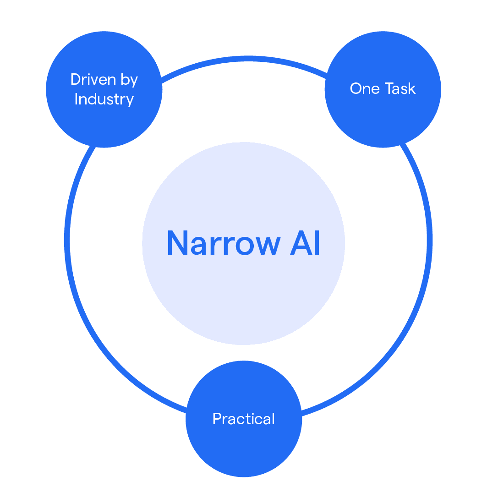

Narrow AI
Designed for specific tasks like facial recognition or playing chess
Your journey into AI starts here
Artificial Intelligence (AI) is technology that enables computers to mimic human intelligence. Think of it as teaching computers to learn, reason, and make decisions - similar to how humans do.
Designed for specific tasks like facial recognition or playing chess
Capable of performing any intellectual task that a human can
Theoretical AI that surpasses human intelligence across all fields
Birth of AI as a field
First chatbots and expert systems
Deep learning breakthrough
AI in everyday life